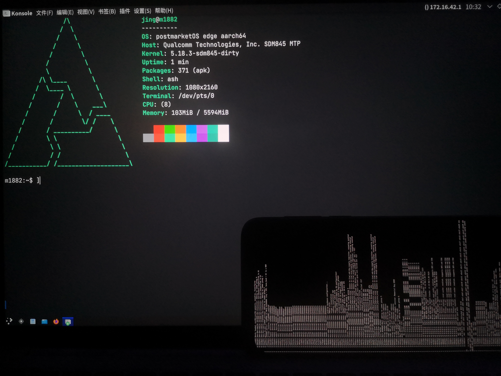

Meizu 16th (meizu-m1882)
|
 Meizu 16th booted with a simple framebuffer, connected via ssh | |
| Manufacturer | Meizu |
|---|---|
| Name | 16th |
| Codename | meizu-m1882 |
| Released | 2018 |
| Category | testing |
| Original software | Flyme 8 (Based on Android 8.1) |
| postmarketOS kernel | Mainline |
| Hardware | |
| Chipset | Qualcomm Snapdragon 845 (SDM845) |
| CPU | Octa-core (4x 2.8 GHz Kryo 385 Gold & 4x 1.7 GHz Kryo 385 Silver) |
| GPU | Adreno 630 |
| Display | 1080x2160 AMOLED |
| Storage | 64/128 GB |
| Memory | 6/8 GB |
| Architecture | aarch64 |
{kind=link}
| USB Networking |
Partial
|
|---|---|
| Flashing | |
| Touchscreen |
Broken
|
| Display |
Partial
|
| WiFi | |
| FDE | |
| Mainline |
Works
|
| Battery | |
| 3D Acceleration | |
| Audio |
Broken
|
| Bluetooth | |
| Camera | |
| GPS | |
| Mobile data | |
| SMS | |
| Calls | |
| USB OTG |
Broken
|
| NFC | |
| Accelerometer | |
|---|---|
| Magnetometer | |
| Ambient Light | |
| Proximity | |
| Hall Effect | |
| Barometer | |
| Power Sensor | |
| Camera Flash | |
|---|---|
| Keyboard | |
| Touchpad | |
| USB-A | |
| HDMI/DP | |
| Ir TX | |
| Ir RX | |
| Stylus | |
| Haptics | |
| Ethernet | |
| FOSS bootloader | |
Contributors
Users owning this device
- ChPu437 (Notes: Porting)
How to enter flash mode
Press and hold Power and Volume Down when the phone is off to enter fastboot.
Installation
| WARNING: This guide assumes that you have unlocked the bootloader and will NOT tell you how to do this, because there's really NO good way to unlock it on one's own. The only known solution is to head to the unlock service providers, who usually CHARGES some amount of money while unlocking your phone. If you get better solution, feel free to share with us. |
| It is suggested that you should read the whole guide carefully before making any changes. This can prevent silly mistakes and prevent the potentially disastrous consequences, as well as saving time and keeping a good mood. |
(If there's only one contributor, all the "I" refers to ChPu437, if else, then plz contact me to replace them. I know this is inappropriate but forgive me plz XD)
Generally, just simply follow SDM845 Mainlining Guide until you got a boot image, but you DO need some little modification to really boot PostmarketOS with a working framebuffer.
During "Creating a framebuffer" section, you'll need to do some extra modification to the template dts node, to keep it simple, just follow these steps instead.
Insert these under the chosen node:
#address-cells = <2>;
#size-cells = <2>;
ranges;
framebuffer0: framebuffer@9d400000 {
compatible = "simple-framebuffer";
reg = <0x0 0x9d400000 0x0 (1080 * 2160 * 4)>;
width = <1080>;
height = <2160>;
stride = <(1080 * 4)>;
format = "a8r8g8b8";
};
And for the reserved-memory node, use this instead:
reserved-memory {
#address-cells = <2>;
#size-cells = <2>;
ranges;
linux,cma {
compatible = "shared-dma-pool";
alloc-ranges = <0 0x00000000 0 0xffffffff>;
reusable;
alignment = <0 0x400000>;
size = <0 0x2c00000>;
linux,cma-default;
};
framebuffer_region@9d400000 {
reg = <0x0 0x9d400000 0x0 0x02400000>;
no-map;
};
};
For the kernel to generate the initramfs, linux-postmarketos-qcom-sdm845 would be okay, you can also use the kernel you've been working on above, there won't be many differences at this moment, as the phone can almost only boot.
Continue follow the guide until the fastboot boot process. Since the phone cannot be directly booted by fastboot boot, this is what you should do:
fastboot flash boot mainline-boot.img
Then reboot the device, and you will get a few penguins with dmesg scrolling up on the display if nothing goes wrong.
Status
Though you'll get some errors during the bootup (probably caused by the dts), the phone can boot with a framebuffer and *potentially* usb networking support
Known issue
- As you can see, most of the hardware didn't work now, especially touchscreen, which is important to interact with a smartphone.
- Though framebuffer works, it gets a rather poor refresh rate at approximately 1 frames per sec. This was once reported in another project trying to port WoA(Windows on Arm) to SDM845-based devices, but it seems that they managed to solve this. Maybe this can be of great value in reference.
Note on usb networking
Enable CONFIG_USB_ETH and CONFIG_USB_ETH_RNDIS and use the common kernel to build initramfs, then you should get usb network and ssh working.
Note on partition layout
For I need to use the phone both porting and daily use, I shrinked my userdata and created 2 new partitions for boot partition and the rootfs. Other layouts should be fine if they don't go against the partition layout.
See also